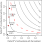
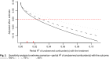

Week 12: Causal Forests for Heterogeneous Treatment Effects
DSAN 5650: Causal Inference for Computational Social Science
Summer 2026, Georgetown University
Schedule
Today’s Planned Schedule:
| Start | End | Topic | |
|---|---|---|---|
| Lecture | 6:30pm | 6:45pm | Final Projects → |
| 6:45pm | 7:10pm | Included Variable Bias → | |
| 7:10pm | 8:00pm | Heterogeneous Treatment Effects → | |
| Break! | 8:00pm | 8:10pm | |
| 8:10pm | 9:00pm | Causal Forests → |
\[ \DeclareMathOperator*{\argmax}{argmax} \DeclareMathOperator*{\argmin}{argmin} \newcommand{\bigexp}[1]{\exp\mkern-4mu\left[ #1 \right]} \newcommand{\bigexpect}[1]{\mathbb{E}\mkern-4mu \left[ #1 \right]} \newcommand{\definedas}{\overset{\small\text{def}}{=}} \newcommand{\definedalign}{\overset{\phantom{\text{defn}}}{=}} \newcommand{\eqeventual}{\overset{\text{eventually}}{=}} \newcommand{\Err}{\text{Err}} \newcommand{\expect}[1]{\mathbb{E}[#1]} \newcommand{\expectsq}[1]{\mathbb{E}^2[#1]} \newcommand{\fw}[1]{\texttt{#1}} \newcommand{\given}{\mid} \newcommand{\green}[1]{\color{green}{#1}} \newcommand{\heads}{\outcome{heads}} \newcommand{\iid}{\overset{\text{\small{iid}}}{\sim}} \newcommand{\lik}{\mathcal{L}} \newcommand{\loglik}{\ell} \DeclareMathOperator*{\maximize}{maximize} \DeclareMathOperator*{\minimize}{minimize} \newcommand{\mle}{\textsf{ML}} \newcommand{\nimplies}{\;\not\!\!\!\!\implies} \newcommand{\orange}[1]{\color{orange}{#1}} \newcommand{\outcome}[1]{\textsf{#1}} \newcommand{\param}[1]{{\color{purple} #1}} \newcommand{\pgsamplespace}{\{\green{1},\green{2},\green{3},\purp{4},\purp{5},\purp{6}\}} \newcommand{\pedge}[2]{\require{enclose}\enclose{circle}{~{#1}~} \rightarrow \; \enclose{circle}{\kern.01em {#2}~\kern.01em}} \newcommand{\pnode}[1]{\require{enclose}\enclose{circle}{\kern.1em {#1} \kern.1em}} \newcommand{\ponode}[1]{\require{enclose}\enclose{box}[background=lightgray]{{#1}}} \newcommand{\pnodesp}[1]{\require{enclose}\enclose{circle}{~{#1}~}} \newcommand{\purp}[1]{\color{purple}{#1}} \newcommand{\sign}{\text{Sign}} \newcommand{\spacecap}{\; \cap \;} \newcommand{\spacewedge}{\; \wedge \;} \newcommand{\tails}{\outcome{tails}} \newcommand{\Var}[1]{\text{Var}[#1]} \newcommand{\bigVar}[1]{\text{Var}\mkern-4mu \left[ #1 \right]} \]
Final Project / End of Term Things
- Midterm grading will be done TONIGHT
- Submit button for HW3 / HW4 TONIGHT
Sensitivity Analysis
- So you’ve got an estimate of a causal effect! What now? Two possible next steps…
- Sensitivity Analysis: Check robustness of your results
- Modeling choices → one point in param space (garden of forking paths)
- If results “truly” hold, shouldn’t disappear with small changes in parameters/choices
- Last week: Can re-estimate with informative → weak → skeptical priors
- This week: Simulate how “strong” omissions would have to be to “ruin” finding
- Heterogeneous Treatment Effects: How does the effect vary btwn subgroups?
- Example today: PROGRESA (Cash transfer poverty-alleviation program in Mexico)
- Program has an overall causal effect, but also a greater causal effect on indigenous households, relative to non-indigenous
- How can we find group-specific effects? Causal forests!
Sensitivity Analysis 2: How Sensitive Are My Results to Omitted/Included Variable Bias?
- You probably know about omitted variable bias from previous classes / intuition… but, included variable bias?
- That’s right folks… colliders can be agents of chaos, laying waste to our best, most meticulously-planned-out models

Does Aging Cause Sadness?
Assessing the Impact of Omitted / Included Vars
- Working example from Cinelli and Hazlett (2020): War in Darfur (2004-2020)
- What is the causal impact of experiencing violence on support for a peace deal
- Researcher A models this scenario as:
\[ \textsf{PeaceIndex} = \tau_{\text{res}} \textsf{DirectHarm} + \hat{\beta}_{\text{f},\text{res}}\textsf{Female} + \textsf{Village} \hat{\boldsymbol \beta}_{\text{v},\text{res}} + \mathbf{X} \hat{\boldsymbol \beta}_{\text{res}} + \hat{\varepsilon}_{\text{res}} \]
- Researcher B instead prefers:
\[ \textsf{PeaceIndex} = \tau \textsf{DirectHarm} + \hat{\beta}_{\text{f}}\textsf{Female} + \textsf{Village} \hat{\boldsymbol \beta}_{\text{v}} + \mathbf{X} \hat{\boldsymbol \beta} + \boxed{\hat{\gamma}\textsf{Center}} + \hat{\varepsilon}_{\text{full}} \]
Our earlier estimate \(\tau_{\text{res}}\) would differ from our target quantity \(\tau\): but how badly? […] How strong would the confounder(s) have to be to change the estimates in such a way to affect the main conclusions of a study?
The Classical OVB Equation
- Remember that \(D\) is our treatment variable! (\(\mathbf{X}\) = covariates, \(Y\) = outcome)
- In a perfect world, we would estimate \(Y = \hat{\tau}D + \mathbf{X} \hat{\beta} + \hat{\gamma}Z+ \varepsilon_{\text{full}}\)
- But, \(Z\) is unobserved \(\leadsto\) “restricted” model \(Y = \hat{\tau}_{\text{res}}D + \mathbf{X} \hat{\beta}_{\text{res}} + \varepsilon_{\text{res}}\)
- What is the “gap” between \(\hat{\tau}\) and \(\hat{\tau}^{\text{res}}\)? \(\text{OVB} = \hat{\tau}_{\text{res}} - \hat{\tau}\)
\[ \begin{align*} \hat{\tau}_{\text{res}} &= \frac{ \text{Cov}[D^{\top \mathbf{X}}, Y^{\top \mathbf{X}}] }{ \text{Var}[D^{\top \mathbf{X}}] } \\ &= \frac{ \text{Cov}[D^{\top \mathbf{X}}, \hat{\tau}D^{\top \mathbf{X}} + \hat{\gamma}Z^{\top \mathbf{X}}] }{ \text{Var}[D^{\top \mathbf{X}}] } \\ &= \hat{\tau} + \hat{\gamma}\frac{ \text{Cov}[D^{\top \mathbf{X}}, Z^{\top \mathbf{X}}] }{ \text{Var}[D^{\top \mathbf{X}}] } \\ &= \hat{\tau} + \hat{\gamma}\hat{\delta} \\ \implies \text{OVB} &= \hat{\tau}_{\text{res}} - \hat{\tau} = \overbrace{ \boxed{\hat{\gamma} \times \hat{\delta}} }^{\mathclap{\text{Impact} \, \times \, \text{Imbalance}}} \end{align*} \]

The ability to produce orthogonalized (\(\top \mathbf{X}\)) versions of vars in the model utilizes the Frisch-Waugh-Lovell Theorem
More Generally
- What if we don’t have a specific omitted variable in mind? We just want to know the expected impact if there were omitted vars… Enter “Partial \(R^2\)”

